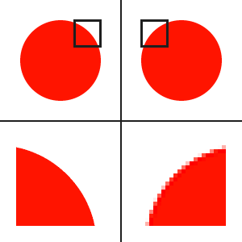

Bitmap betekent letterlijk: een plaatje dat uit bits is opgebouwd. Een van de manieren waarop een grafische afbeelding op een schijf bewaard kan worden, is door de tekening punt voor punt te beschrijven. Dat is mogelijk omdat een tekening zowel op het scherm als in druk uit puntjes is opgebouwd. Zo'n puntje heet een pixel (een samentrekking van picture element). Van elke pixel wordt de kleur beschreven in een aantal bits; hoe meer bits, des te meer kleur er mogelijk zijn. Een zwartwit-plaatje heeft aan één bit per pixel genoeg, met 16 miljoen kleuren zijn er 24 bits per pixel nodig. Het aantal bits per pixel wordt ook wel kleurdiepte genoemd. Een bitmap is daarmee een afbeelding die bestaat uit een rechthoekig raster van vierkantjes. Elke pixel bevat informatie die beschrijft of de pixel zwart of wit is, of dat de pixel een kleurwaarde heeft.
Een vectorafbeelding is een grafische voorstelling die opgebouwd is uit eenvoudige meetkundige objecten, zoals punten, lijnen, krommen, polygonen e.d. Complexe vormen ontstaan door combinaties van deze basisvormen. De afbeelding wordt beschreven door de formules van de objecten. Daardoor laten vectorafbeeldingen zich tot elk gewenst formaat vergroten zonder dat ze wazig of blokkerig worden. Lijnen en krommen worden bij inzoomen niet dikker, tenzij ze met dikte worden gedefinieerd, door de beide zijkanten en de opvulling ertussen apart te definiëren. Dit wordt ook toegepast op letters, cijfers en andere tekens, waardoor teksten bij inzoomen ook mooier zijn.